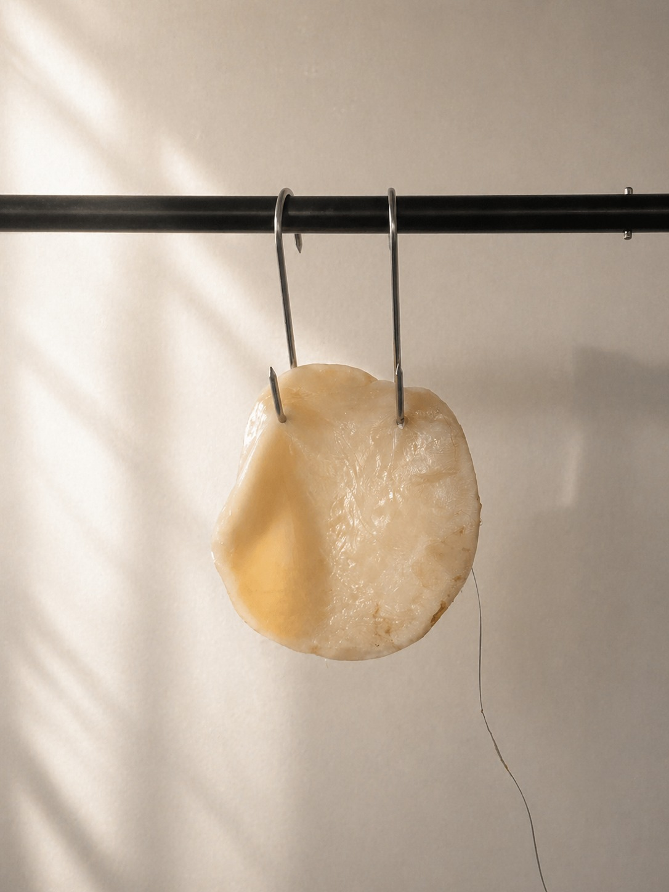
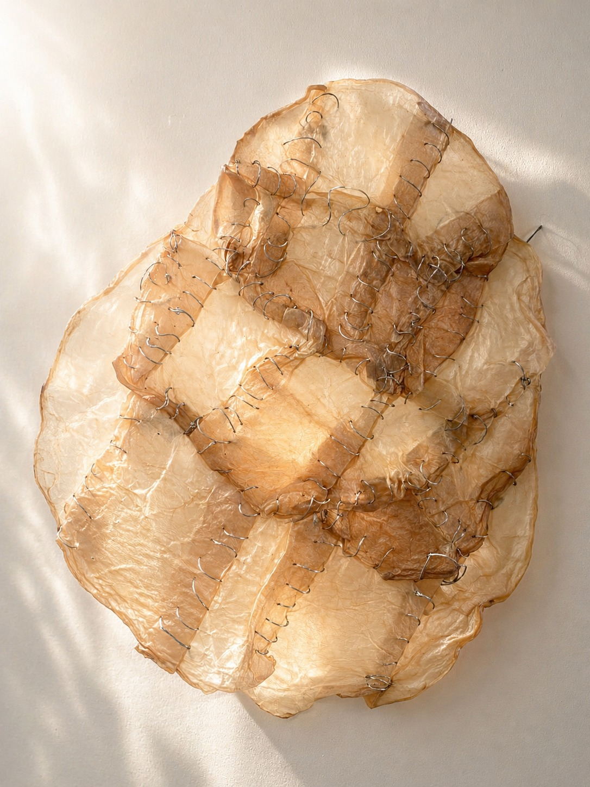
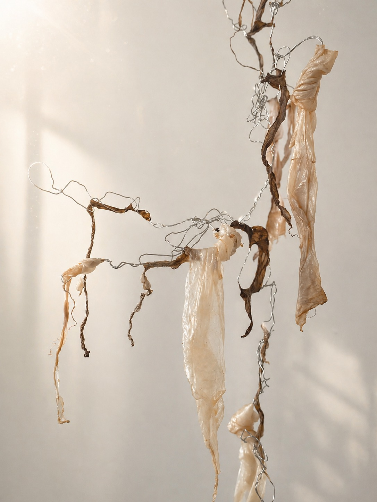

Soft Interfaces
A projekt során a soft interface lehetőségeit egy élő anyagon, a kombucha SCOBY-n keresztül vizsgáltam. A SCOBY (Symbiotic Culture of Bacteria and Yeast) egy cellulózalapú biofilm, amely a fermentáció során jön létre. Bár szilárd, gumiszerű korongként jelenik meg, tömegének körülbelül 96%-át víz alkotja. A baktériumok által létrehozott cellulózhálózat nagy mennyiségű folyadékot képes megkötni, ezért az anyag inkább egy vízzel telített gélként viselkedik, mint hagyományos szilárd testként.
In this project, I investigate the possibilities of soft interfaces through a living material: the kombucha SCOBY. The SCOBY (Symbiotic Culture of Bacteria and Yeast) is a cellulose-based biofilm formed during the fermentation process. Although it appears as a solid, rubber-like disc, approximately 96% of its mass consists of water. The cellulose network produced by the bacteria is capable of retaining large amounts of liquid, making the material behave more like a water-saturated gel than a conventional solid.
Ez az anyagi sajátosság alkalmassá teszi a SCOBY-t arra, hogy az élő test, a biológiai anyag és a technológiai interfészek határterületeit vizsgáljam. A SCOBY egyszerre idézi fel bőr, hús és organikus szövet asszociációit, ezért a munka a biohorror esztétikájához is kapcsolódik: olyan formák és anyagok jelennek meg benne, amelyek egyszerre ismerősek és idegenszerűek.
These material properties make the SCOBY suitable for exploring the boundaries between the living body, biological matter, and technological interfaces. The SCOBY evokes associations with skin, flesh, and organic tissue, linking the work to the aesthetics of biohorror: forms and materials that appear both familiar and alien at the same time.
Ebben az értelemben a SCOBY egyfajta poszthumán testmetaforaként jelenik meg: egy élő, növekvő struktúraként, amely reagál a környezetére, ugyanakkor nem illeszthető egyértelműen sem az emberi, sem az állati test kategóriájába.
In this sense, the SCOBY functions as a posthuman body metaphor - a living, growing structure that responds to its environment, yet cannot be clearly categorized as either human or animal.
A projekt során három különböző kísérleti variációt hoztam létre.
The project consists of three experimental variations.

1. variáció
Variation 1
Az első kísérletben a telepből kivett friss SCOBY-darabot közvetlenül egy vezető szálhoz kapcsoltam, majd két húskampóval átszúrva függesztettem fel.
In the first experiment, a freshly removed piece of SCOBY was directly connected to a conductive thread and suspended using two meat hooks.
A SCOBY textúrája erősen emlékeztet húsra vagy élő szövetre, ezért a munkafolyamat során egyfajta „pre-testi” anyagként kezdtem kezelni: olyan felületként, amelyből vágni lehet. A vágás gesztusa ambivalens helyzetet hoz létre. A beavatkozás brutálisnak hat, miközben az élő telep számára nem jelent fájdalmat, a hozzá kapcsolt hangok azonban mégis egyfajta szenvedés érzetét idézik elő.
The texture of the SCOBY strongly resembles flesh or living tissue, which led me to approach it as a kind of "pre-bodily" material - a surface that can be cut into. The act of cutting creates an ambivalent situation. The intervention appears violent, while for the living colony it does not cause pain; however, the sounds generated through interaction suggest a sense of suffering.

2. variáció
Variation 2
A második kísérletben a SCOBY-t kiszárítottam, majd felvágva vezető fonallal összevarrtam. A kiszáradt anyag bőrszerű textúrát vesz fel, amely még erősebben kapcsolja a munkát a test és a bőr motívumához.
In the second experiment, the SCOBY was dried, cut, and stitched together using conductive thread. Once dried, the material takes on a skin-like texture, further reinforcing its connection to the body and the motif of skin.
A SCOBY különleges tulajdonsága, hogy kiszáradás után vízzel újraaktiválható. Permetezés hatására ismét rugalmasabbá válik, így könnyebben varrható és formálható. A kísérletezés során a nedves és száraz állapot közötti átmeneti állapot vált kulcsfontosságúvá.
A unique property of the SCOBY is that it can be reactivated with water after drying. When sprayed, it regains flexibility, making it easier to sew and manipulate. The transitional state between dry and wet became a key moment in the experimentation process.
A varrás gesztusa testrekonstrukcióra, sebészeti beavatkozásra vagy egyfajta szörny-szerű újrakomponálásra emlékeztet.
The act of stitching evokes associations with bodily reconstruction, surgical intervention, or the assembly of a monstrous form.

3. variáció
Variation 3
A harmadik kísérletben a SCOBY-telepből leváló, cafatszerű darabokat használtam fel, amelyeket eredetileg hulladéknak tekintettem. Ezekből egy szoborszerű, szélcsengőre emlékeztető struktúrát állítottam össze.
In the third experiment, I used the fragmented, residual pieces that naturally detach from the SCOBY colony - materials initially considered waste. These were assembled into a sculptural structure resembling a wind chime.
A fémhuzalból készült vázra rögzített SCOBY-darabok érintés hatására hangot adnak ki. A hang jelenléte tovább erősíti a munka kísérteties és nyugtalanító minőségét.
The SCOBY fragments, attached to a metal wire framework, generate sound when touched. The presence of sound further amplifies the uncanny and unsettling quality of the work.
Friss állapotukban ezek a darabok bőrre emlékeztetnek, kiszáradva pedig egy személyes emléket idéznek fel: a gyerekkorból megőrzött, kiszáradt köldökzsinórt. Ez az asszociáció az eredet, a születés és a testiség témáihoz kapcsolja a munkát.
In their fresh state, these fragments resemble skin, while in their dried form they evoke a personal memory: the dried umbilical cord preserved from childhood. This association connects the work to themes of origin, birth, and corporeality.